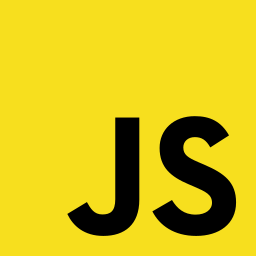
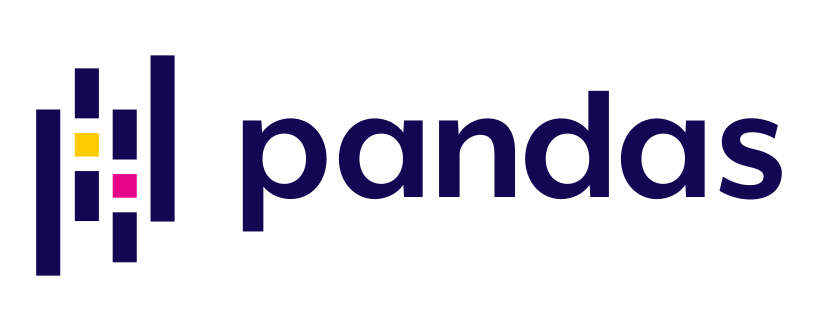
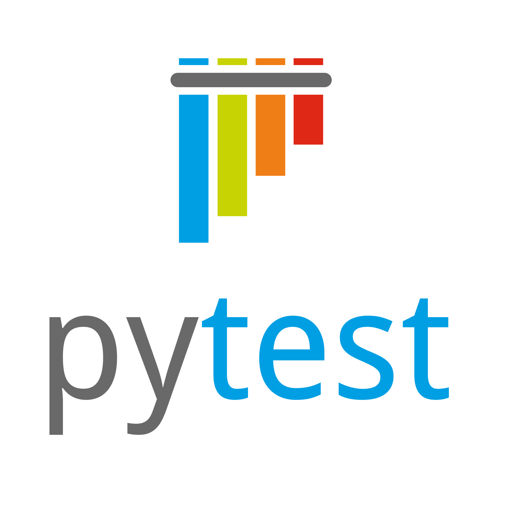
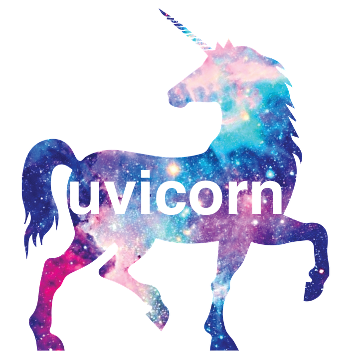
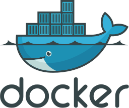
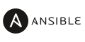
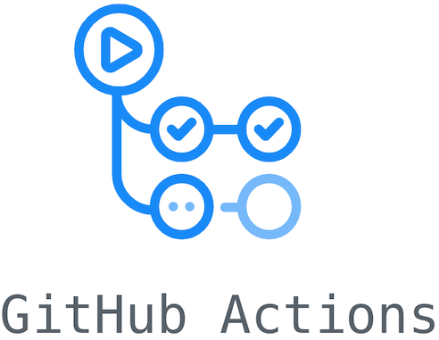

Skills
- AI Infrastructure & MLOps: Amazon Bedrock AgentCore, Multi-Agent Workflows, LLM Orchestration, GeoAI, Prompt Engineering.
- Data Engineering: Apache Kafka, ETL Pipelines, Celery, Redis, SpatioTemporal data processing.
- Backend & Cloud: AWS (Bedrock, Microservices, EKS), Python, FastAPI, PostgreSQL, MongoDB.
- Systems Engineering & Edge: C++, Qt Framework, Sensor Integration (IoT/Radar/AIS), Fault-tolerant distributed systems.
- DevSecOps & CI/CD: GitHub Actions, Docker, Kubernetes, Zero Trust patterns (OAuth 2.0, JWT), Coolify.
Languages and Databases

Frameworks



Tools




